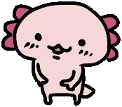

ぜんぶで10ステージ。ステージごとに決まった数のエサを食べるとクリア！ 水そうは、あみですくわれて、5ステージ目まで だんだん大きくなるよ。途中からはポンプの水流も出てくるよ。
水そうに落ちてくるエサを、およいでパクッ！底にとどいたエサは少しするときえるよ。5つきえると水がにごって、ゲームオーバー。
エサを10こ食べると おなかいっぱいでうごきがにぶくなるよ。💩ボタンでうんちをすると元にもどるけど、底に4秒おくと水がよごれる（エサ2つ分）。ときどき左右から入ってくるスポイトの先でうんちをすると、すいとってくれるよ！
たまに落ちてくるヌマエビは食べると3点。食べずにおくと、底を歩いて底のエサやうんちを食べてくれるよ（最大4ひき）。
◀ ▶ でよこにすすむ ／ およぐでふわっとうえへ（ちょっとずつしずむよ）
たべたエサ
0 こ
ベスト 0